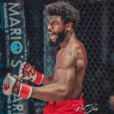
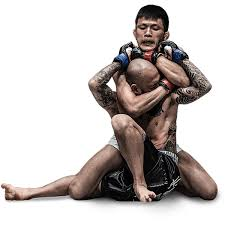
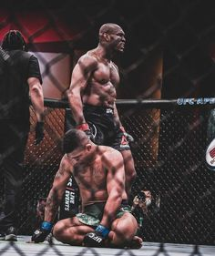

MMA, czyli Mixed Martial Arts (sztuki walki w pełnym kontakcie), to sport walki, który łączy różnorodne style i techniki, takie jak boks, kickboxing, jiu-jitsu, zapasy, muay thai i inne. Zawodnicy MMA walczą zarówno w stójce, jak i w parterze, co czyni ten sport bardzo zróżnicowanym i dynamicznym. 
Zasady MMA
- Runda i czas trwania: Zawody MMA składają się zazwyczaj z trzech lub pięciu rund, z których każda trwa pięć minut. Między rundami są krótkie przerwy (1 minuta).
- Wagi: Zawodnicy są klasyfikowani według kategorii wagowych, co ma na celu zapewnienie równości sił między zawodnikami. Przykładowe kategorie to: piórkowa, lekka, średnia, półciężka i ciężka. 
- Punkty: Walki mogą być wygrane na kilka sposobów, w tym przez nokaut (KO), poddanie (submission) lub decyzję sędziów. Punkty są przyznawane na podstawie skuteczności, kontroli walki i agresji.
- Dozwolone i niedozwolone techniki: Dozwolone są różne techniki, takie jak ciosy pięścią, kopnięcia, łokcie, kolana i chwytanie. Niedozwolone są techniki mogące spowodować poważne obrażenia, takie jak uderzenia w tył głowy, kopnięcia w leżącego przeciwnika, czy chwytanie za odzież.
- Sędziowanie: Walki są nadzorowane przez sędziów, którzy dbają o bezpieczeństwo zawodników oraz przestrzeganie zasad. Mogą przerwać walkę, gdy uznają, że jeden z zawodników jest w niebezpieczeństwie.
Coś od siebie
MMA zyskało ogromną popularność na całym świecie, zwłaszcza dzięki organizacjom takim jak UFC (Ultimate Fighting Championship). To sport, który nie tylko wymaga doskonałej kondycji fizycznej, ale także umiejętności strategicznego myślenia i taktyki. Zawodnicy muszą być wszechstronni, aby radzić sobie w różnych sytuacjach podczas walki.
MMA przyciąga wielu młodych ludzi, oferując im szansę na rozwój fizyczny i mentalny, a także na zdobycie cennych umiejętności obrony osobistej. Jednak, jak w każdym sporcie kontaktowym, bezpieczeństwo jest najważniejsze. Organizacje i trenerzy starają się dbać o zdrowie zawodników, co skutkuje coraz bardziej restrykcyjnymi zasadami oraz technikami bezpieczeństwa.
MMA to nie tylko sport, ale i styl życia, który łączy pasję do walki z dyscypliną i samorozwojem.